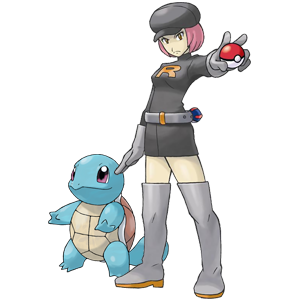

La Team Rocket a capturé Carapuce!
Pour sauver le pauvre Pokémon...
1. Take a picture of your surroundings. Make it good!
2. Turn your photo into a postcard! Choose someone to send it to (un destinateur) and write them a brief message. It can be personal or perhaps a general advertisement for Broward College.
[contact-form to="thoy@broward.edu"][contact-field label="Nom" type="name" required="1" /][contact-field label="Destinateur" type="text" required="1" /][contact-field label="Message" type="textarea" required="1" /][/contact-form] 3. Share your postcard with Prof Trent! You can:- upload your file(s) to D2L, or
- email them to thoy@broward.edu
4. When you're finished, be sure to submit, then click here!